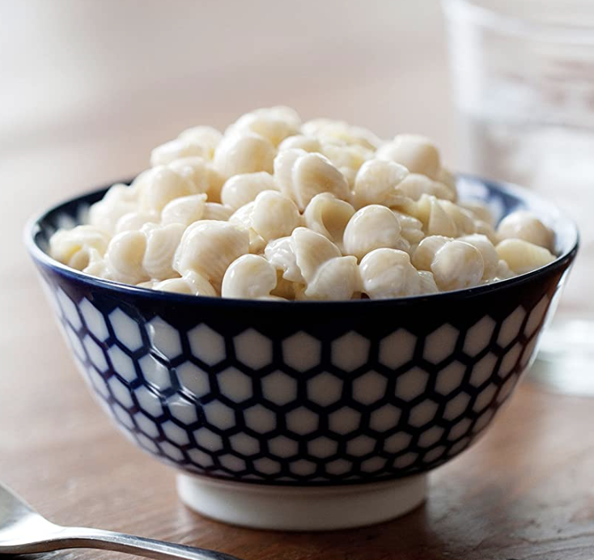

Fill a pan with boiling water and add in some salt and olive oil.
Bring this water to a boil, after it's boiling, add in your pasta and cook for approximately 8 minutes.
Make sure to turn the heat down on the stove to low, then mix in the butter and milk with the cheese sauce.
